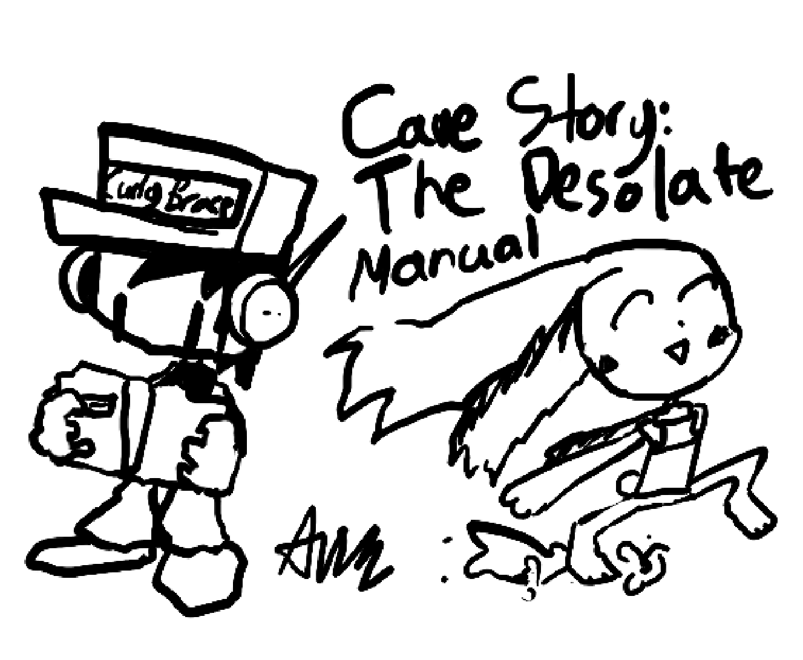
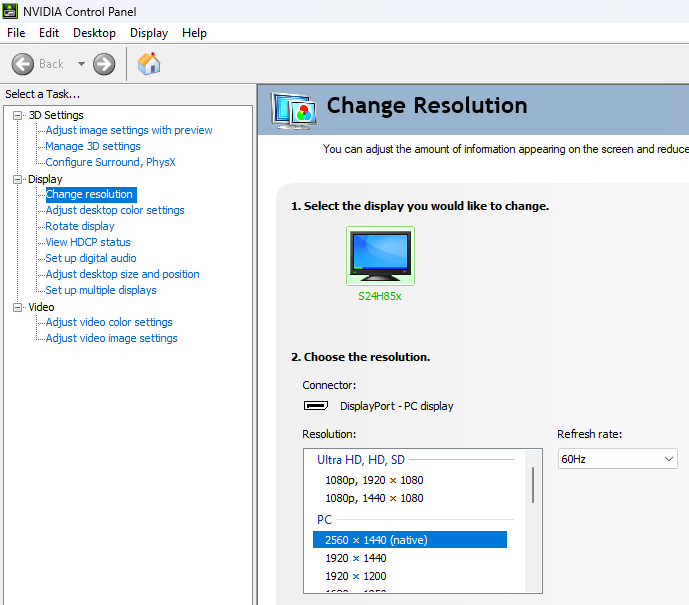
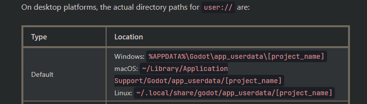

Cave Story: The Desolate
Note: If you are using Linux, you shouldn't have to worry about minimum operating system requirement.
| Operating system | Windows 7, MacOS 10.12 |
|---|---|
| GPU | OpenGL 3.3 / OpenGL ES 3.0 compatible hardware |
| RAM | 2GB |
| Storage | 300MB |
| Operating system | Windows 10, MacOS 10.15 |
|---|---|
| GPU | Vulkan 1.0 compatible hardware |
| RAM | 4GB |
| Storage | 300MB |
"My game is constantly lagging / jittering, what do I do?"
Try limiting your refresh rate to the game FPS (frames per second). The game is limited to run at 60 FPS, so when running at higher FPS than that, it can cause jitter.
If that doesn't work, try running the game in fullscreen / windowed fullscreen, and turning on VSync (not adaptive or mailbox).
(In the example shown above, in the NVIDIA Control Panel > Display > Change resolution section, my monitor is set to run at 60Hz, which is the maximum refresh rate it can run at. This is good because it matches the FPS of the game. For other graphics cards besides NVIDIA (AMD & Intel) and other operating systems besides Windows (MacOS & Linux), refer to their specific settings to change the refresh rate.)
"My game is having graphical artifacts in the Soap Pools, what do I do?"
This is a Godot game engine (4.0.3) issue from my understanding. This may or may not be fixed in a later Godot version (which I will most likely move the project to).
"My save file dissapeared when I selected New on the Title Screen, how can I get it back?"
If you haven't pressed New on the Title Screen again after this, and your not on a mobile operating system (i.e. Android since most devices don't have root access) your save file will be located in these locations (according to Godot game engine documentation) in a "save_backup.cfg" file. Delete the current "save.cfg" in that location and rename the "save_backup.cfg" file to "save.cfg".
"I'm getting the error: "Unable to initalize Vulkan video driver". How can I fix this?"
This error means that your graphics card driver is too old to support Vulkan. This is because the game runs on the Mobile renderer in Godot, which uses Vulkan. You can still run the game using the OpenGL 3 driver by following the instructions in the error message. The game will work fine except there may be some stutters and missing particles because those effects rely on Vulkan.